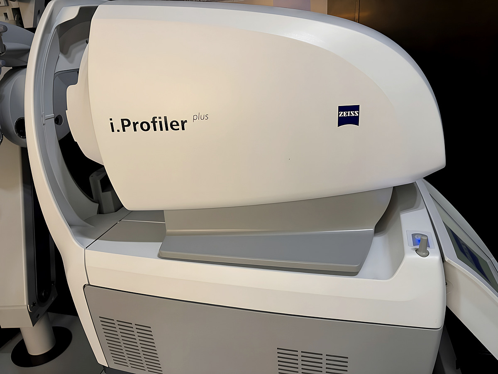
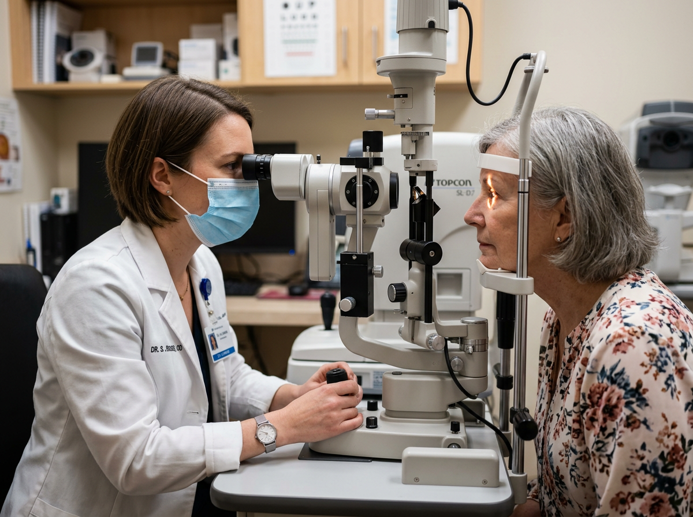
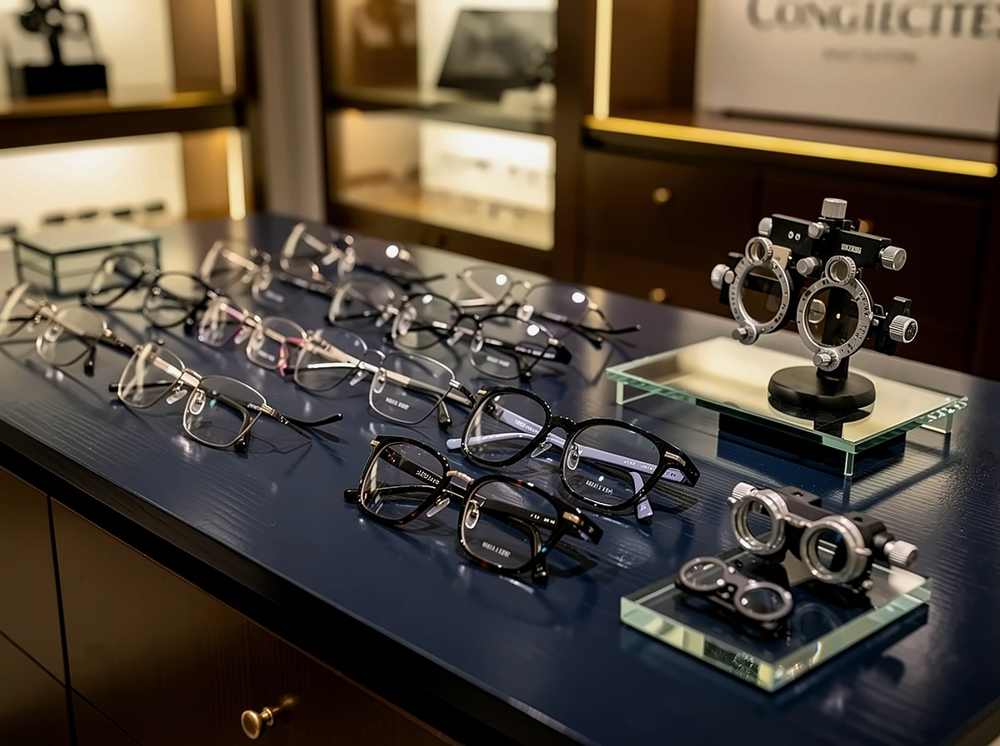
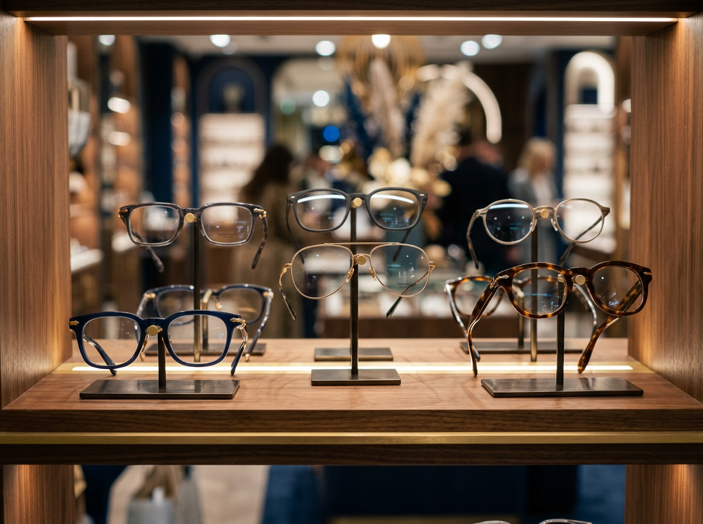
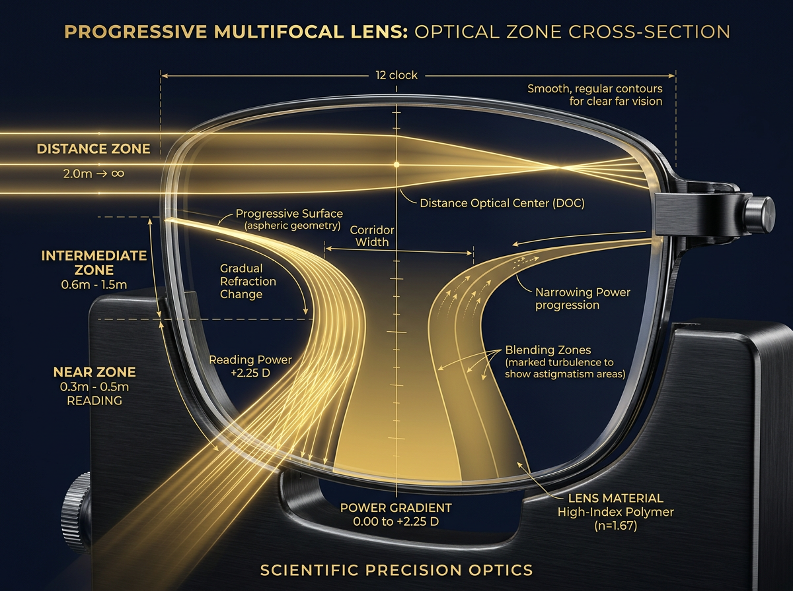
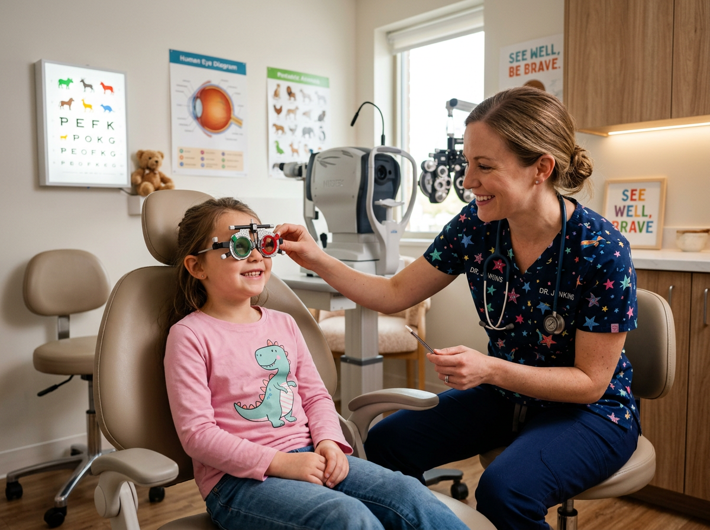

✦대전보건대학교 특강 교수
✦옵토메트리스트 3기
✦피팅 마스터 수료
SCROLL
안경사 조성인 · 대전보건대학교 특강
20yr
임상 경력
6K+
누진다초점 처방
1:1
담당 안경사 직접 케어
ZEISS
정밀 웨이브프론트
Optometrist
임상 전문
안경사
Precision
정밀
검안
ZEISS
자이스
정밀 장비
Progressive
누진다초점
전문
Fitting
정밀
피팅
 ZEISS i.Profiler · Precision Optometry
ZEISS i.Profiler · Precision Optometry
안경원은 많습니다. 하지만 20년 임상 경험과 첨단 장비,
보건대학교 특강 교수의 전문성이 모인 곳은 흔하지 않습니다.
보건대학교 특강 교수, 옵토메트리스트 3기, 피팅 마스터 수료. 오직 정확하고 편안한 안경만을 연구해온 임상 전문가입니다.
자세히 보기 →웨이브프론트 수차분석, 각막지형도, 동공 측정을 한 번에. 일반 검사가 놓치는 미세한 광학 오차까지 잡아냅니다.
자세히 보기 →누진다초점, 고도수, 성장기 근시 억제, 안질환 케어, 정밀 피팅. 맞춤형 임상 케어를 제공합니다.
자세히 보기 →
ZEISS · Flagship일반 검사가 구면·원주 도수에 그친다면, ZEISS i.Profiler® plus는 눈 전체의 광학적 지도를 그립니다. 야간 빛번짐·눈부심의 실제 원인을 데이터로 특정하고, 처방의 근거를 만듭니다.

Expertise
안경광학과 특강 교수로서 정밀검안과 누진다초점 처방을 직접 가르치는 수준의 전문성을 안경원 고객 모두에게 적용합니다.

Binocular Vision
양안개방검사로 두 눈이 함께 사용하는 실제 환경을 재현하여, 감각계가 편안하게 받아들일 수 있는 최적 도수를 설계합니다.

Try Before You Buy
누진다초점, 기능성 렌즈를 설명이 아닌 실제 샘플로 직접 착용해보고 결정합니다. 부적응 없는 최적의 렌즈를 고객이 직접 체감 후 선택합니다.

Case 01
Case 04"어지러울까 봐 걱정했는데 전혀 없고, 훨씬 깨끗해요. 이전 안경원에서는 이런 설명을 들어본 적이 없었어요."70대 여성 고객 · 초고도근시 + 백내장 케이스
"세 번이나 다시 맞춰봤는데, 여기서 처음으로 흔들림 없이 선명하게 보이는 누진안경을 찾았습니다."60대 남성 고객 · 누진다초점 교체 성공기
"지금까지 쓴 것 중 눈이 가장 덜 작아 보이는 안경이에요. PD 계산부터 달랐습니다."33세 여성 고객 · 양안 합도수 −9.75D